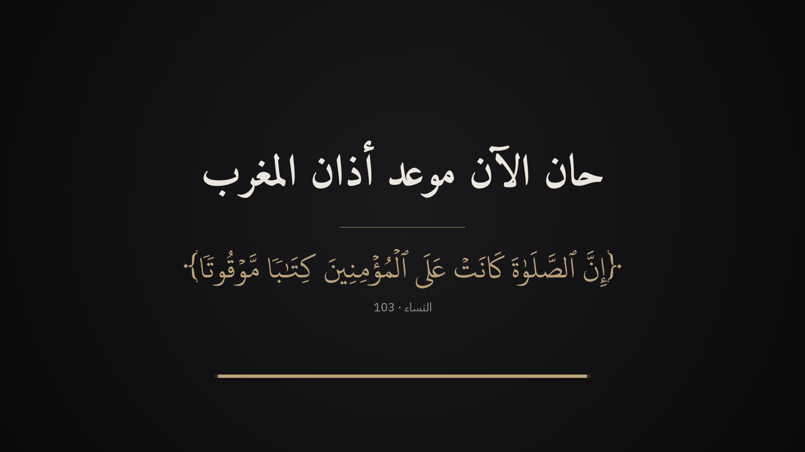
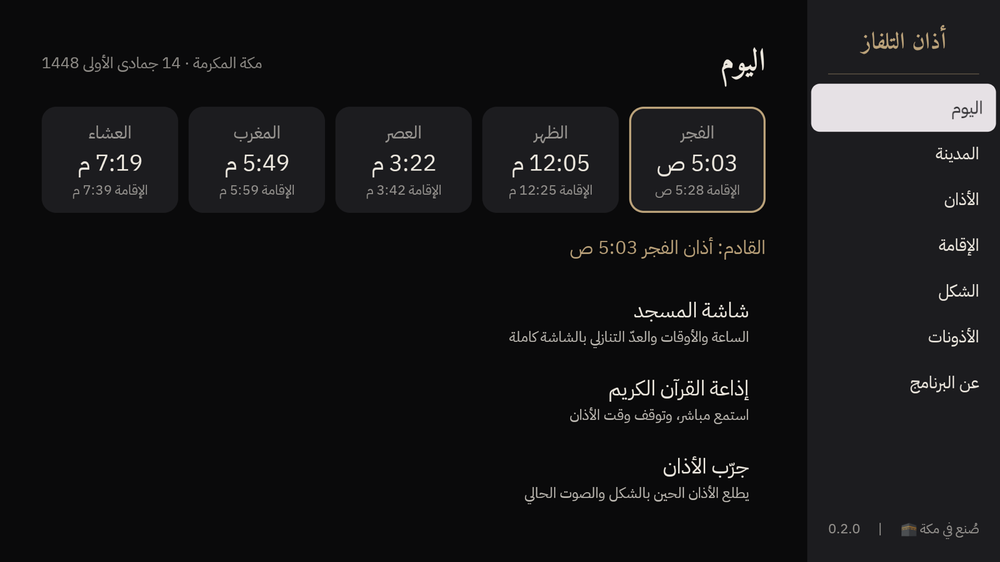
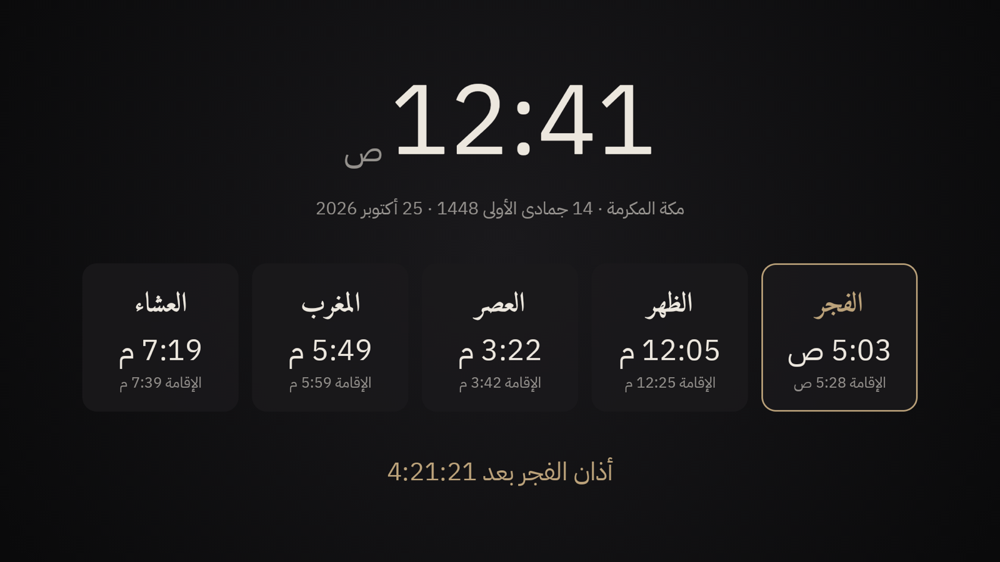
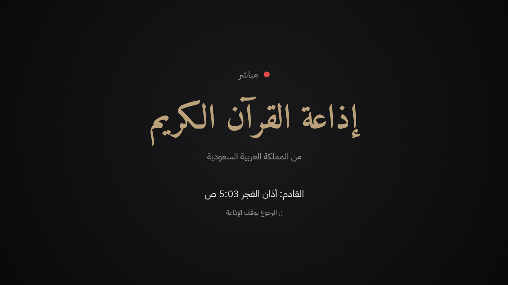

التلفزيون يذكّرك بالصلاة.
وقت الأذان يوقف اللي شغّال، ويرفع الأذان على الشاشة.
النساء · 103

لكل بيت فيه تلفزيون شغّال، والصلاة ممكن تفوت والناس مندمجين.
عيالك قدام الكرتون أو الألعاب أو يوتيوب؟ وقت الأذان تطلع الشاشة لهم، ويوقف اللي يتفرجون عليه. تذكير هادي بدون صراخ، ويتعلّمون إن الصلاة أهم من أي شي.
اللي ما يسمع أذان المسجد، أو ما يقدر يتابع الساعة. الأذان يجيه على الشاشة اللي قدامه، بخط كبير وواضح، وبصوت.
أكثر وقت تفوت فيه الصلاة. البرنامج يوقف المقطع، ويذكّرك، وأنت تكمّل بعد الصلاة من نفس المكان.
شقق ومجمّعات ما يوصلها صوت الأذان، أو بيوت في مدن ودول ما فيها أذان أصلاً. التلفزيون يصير هو المؤذن.
تلفزيون شغّال طول السهرة؟ الكل يشوف الأذان في وقته، والإقامة بعده، وما أحد يتأخر.
بعد الأذان بوقت، تطلع شاشة «حان الآن موعد إقامة الصلاة»، عشان تعرف إن الإمام بيكبّر.
ما تسوي شي. كل شي يصير لحاله.
يوقف اللي شغّال. المسلسل أو المباراة أو يوتيوب يوقف مكانه.
يطلع الأذان على الشاشة كاملة، باسم الصلاة وآية عن الصلاة بخط المصحف، وصوت الأذان.
بعد ما يخلص، ترجع للي كنت تتفرج عليه، وهو واقف لين تضغط تشغيل. ما يفوتك شي.
نفس تقويم أم القرى الرسمي، وتقدر تختار مدينتك من أي مكان في العالم.
أذان المسجد الحرام، أو إذاعة القرآن الكريم مباشر. وتقدر تختار غيرها.
كل شي بالريموت، من قائمة واضحة بالعربي.

مثلاً تطفي أذان الفجر لأن الكل نايم، وتخلي الباقي.
زر واحد يوقف الأذان كله، وترجّعه متى ما تبغى.
عدّل الدقايق حسب مسجد حيّكم.
كبّر الخط لو الكنبة بعيدة، وغيّر اللون.
التلفزيون يصير مثل شاشة المسجد، ويشغّل لك الإذاعة.

الساعة، وأوقات اليوم، والإقامة، وعدّ تنازلي للأذان الجاي. خلّها شغّالة طول اليوم.
تسمعها مباشر متى ما تبغى، وتوقف لحالها وقت الأذان.

قبل ما ينزل في المتجر، نحتاج ناس يجرّبونه أسبوعين في بيوتهم.
عندك تلفزيون أندرويد أو جوجل، وتبغى تكون من أول الناس؟ تواصل معنا، ونرسل لك طريقة التنزيل.
البقرة · 43
صدقة جارية عن صاحبه وأسرته، وعن كل من ساهم فيه، إلى يوم الدين.
صُنع بإحسان في مكة المكرمة، بواسطة زياد مياجان.